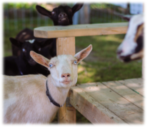
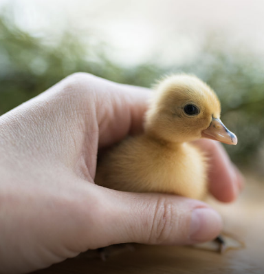

All about
Critter Visits
Critter Visits

Critter Visits at your location
Critter Visits is unique with our miniature farm animals and the up-close experience we host with you. Our Critters are handled daily at the farm and are ready to meet you and your guests for holding and snuggling. It’s animal therapy Farm Style!
Fees
 Our Basic Critter Visit features at least 5 breeds of miniature farm critters and several varieties of most breeds. For one-hour at your location, with up to 10 people, pricing starts at $225 plus travel, applicable tolls and taxes. These animals will include a combination of: sheep & lambs, goats & kids, funky chickens & chicks, ducks & ducklings, geese & goslings, rabbits & bunnies, pigs & piglets, turkeys and guinea pigs.
Our Basic Critter Visit features at least 5 breeds of miniature farm critters and several varieties of most breeds. For one-hour at your location, with up to 10 people, pricing starts at $225 plus travel, applicable tolls and taxes. These animals will include a combination of: sheep & lambs, goats & kids, funky chickens & chicks, ducks & ducklings, geese & goslings, rabbits & bunnies, pigs & piglets, turkeys and guinea pigs. We can add one larger animal with our Critter Buddy staff for an additional charge of $150 plus taxes. Our current selection includes: miniature cows & calves, ponies, mini donkeys, and alpacas.
Perhaps you want JUST a pair of larger Critters? Fees start at $175 plus travel, tolls & taxes.
One Unicorn for petting, grooming, and walk-abouts will cost $175 per hour plus travel, tolls & taxes.
Our Pony Cart or Winter Sleigh with our specially-trained Critter Buddy staff of at least two begin at $250 per hour plus travel, tolls and taxes.
See information below for specifics regarding Schools, Day Care Centres, Retirement Residences & Senior Homes, Church Groups, Community, Seasonal and Fund-Raising Events.
CUSTOM EVENTS, for longer times and larger groups, are quoted to match your precise needs.

 Please EMAIL email, time, estimated crowd, venue for pricing. We are proud to be the Petting Zoo of record for the Lindsay Agricultural Exhibition. We are a preferred vendor for the Toronto District School Board and the City of Kawartha Lakes (Libraries and Special Events).
Our farm is not open to the public for General Drop-Ins or Tours. We do host winter events by appointment at our farm in Lakehurst, Ontario.
Click Here to learn about Santa Days in November & December.
Click Here to learn about Frozen Too Snowy Adventures in December, January and February.
Please EMAIL email, time, estimated crowd, venue for pricing. We are proud to be the Petting Zoo of record for the Lindsay Agricultural Exhibition. We are a preferred vendor for the Toronto District School Board and the City of Kawartha Lakes (Libraries and Special Events).
Our farm is not open to the public for General Drop-Ins or Tours. We do host winter events by appointment at our farm in Lakehurst, Ontario.
Click Here to learn about Santa Days in November & December.
Click Here to learn about Frozen Too Snowy Adventures in December, January and February.
Deposit is required

 A non-refundable, non-transferable deposit of 50% is required upon booking and we come rain, snow or sunshine. If, for any reason, your event must have a date change, we will work with you to find an alternate (fees required). Full payment will be due the Wednesday prior to the event. You will receive an email invoice with options to pay by Credit Card or E-Transfer. Your contract and heath information are available through a PDF link on your invoice.
A non-refundable, non-transferable deposit of 50% is required upon booking and we come rain, snow or sunshine. If, for any reason, your event must have a date change, we will work with you to find an alternate (fees required). Full payment will be due the Wednesday prior to the event. You will receive an email invoice with options to pay by Credit Card or E-Transfer. Your contract and heath information are available through a PDF link on your invoice.
For Events at your Location
Critter Visits are the perfect solution to mark an early milestone or a birthday in the 100’s! Our miniature farm friends are a hit with all ages, as guests engage with the mini critters and with each other. Our team will arrive and set up inside or outside (weather dependent and with the health and safety of you and our animals in mind).For Inside Events
 Tarps are set down to protect the floor then covered with a bed of straw. See-through gates create a Critter Zone and the animals are set into this area. The Critter Collection are introduced to your guests by breed, including how to pet and hold. After Masking-Up, guests are invited into the zone, to visit in appropriate-sized groups. Parents must always be near & may join them inside our gated area to take photos, answer questions and to enjoy the experience with the kiddos.
Tarps are set down to protect the floor then covered with a bed of straw. See-through gates create a Critter Zone and the animals are set into this area. The Critter Collection are introduced to your guests by breed, including how to pet and hold. After Masking-Up, guests are invited into the zone, to visit in appropriate-sized groups. Parents must always be near & may join them inside our gated area to take photos, answer questions and to enjoy the experience with the kiddos.
For Outside Events
Our team works with your co-ordinator to find the best location for the season - shade for the heat of the day, or a warm sunny spot, out of the wind if the temperatures are cooler. The gates are set up and Critters set inside the area. Sometimes our larger animals can be led around on a leash in the backyard as a treat for the guest of honour and their friends. Meet Barney Bunny, lovely lambs, Mama and baby donkey plus chicks and ducklings, crazy-feathered chickens, pot belly piglets, ducks with pom poms on top and our selfie-loving alpacas. Participants in our Foster or Hatching programs are eligible for a thank-you discount with Critter Connections. Text Farmer Karen!Our Unicorn
Our Unicorn is ready to pose with your princess or knight. They'll show off their colours with Frills + Fandom. (Jays, Habs,
Leafs, Raptors and more may be seen). Meet
critters dressed as Movie + TV characters.
Friends from tropical places, Frozen adventures
& Princesses to Pirates.
They'll show off their colours with Frills + Fandom. (Jays, Habs,
Leafs, Raptors and more may be seen). Meet
critters dressed as Movie + TV characters.
Friends from tropical places, Frozen adventures
& Princesses to Pirates.
Our Unicorn One-Hour escorted tour for your group 
Monday to Thursday: $65 per booking
Holidays, Fridays and Weekends: $85 per booking
Your group of up to 10 people (in up to 2 vehicles) can book a time, any day of the week. We won't add people to your group. It's your bubble travelling with our Critter Buddy for the hour.

CLOSED-TOE shoes or boots must be worn by all guests entering our Critter Connections Zone. Covid Protocols include the necessity for MASKS to be worn by all guests.
This is a non-refundable program. Come Rain or Shine, dressed for the weather.
Summer Mid-Week Duckling Foster Package
 Pick-up your ducklings after you visit our Critter Connections Zoo. Foster baby duckies for a week or three and return them back to the farm to join their cousins. Duck Kits include bedding, food, comprehensive manual, food and water dishes plus vitamin supplement. Review the details under the FOSTER link. A Discount is automatically applied when booking your package deal with two or more ducklings. These are Super Summer Friends. Watch them grow, swim and follow your kiddos around. Highly Recommended by parents! © Critter Visits of Woolley Wonderland Farm Inc. 2020